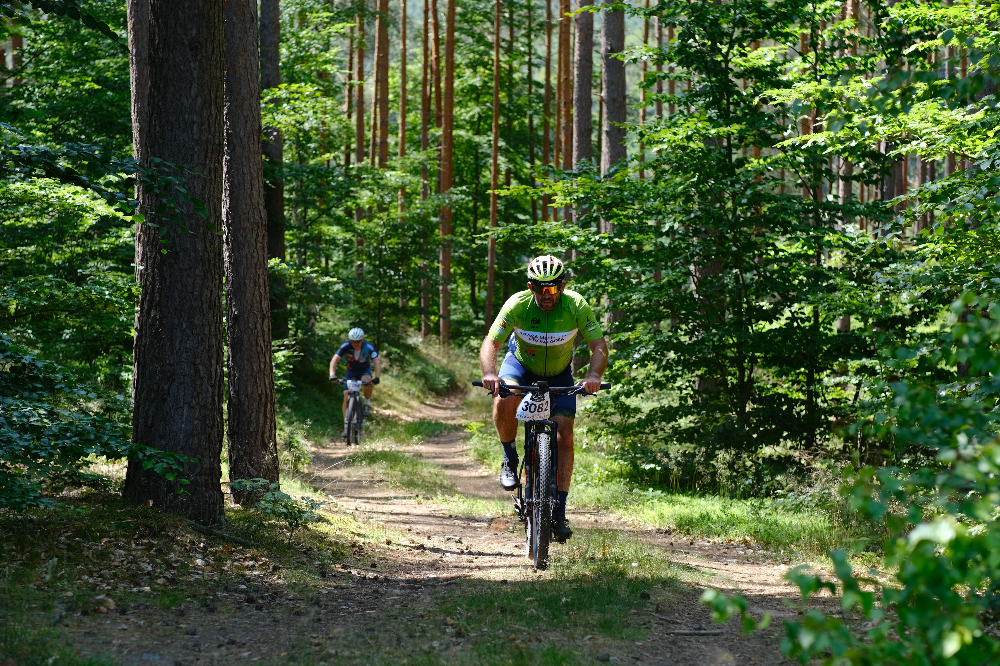
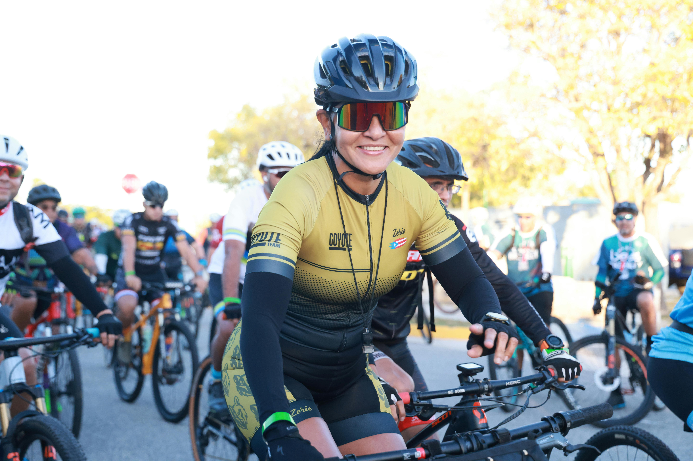
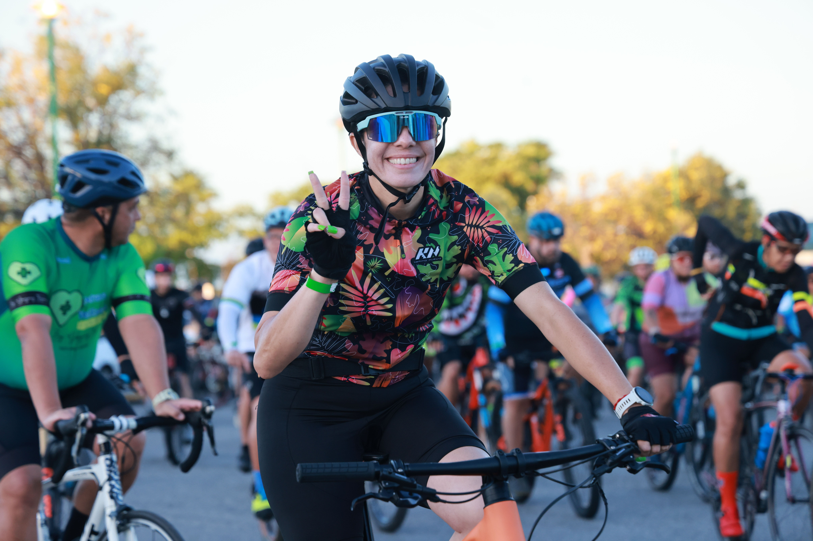
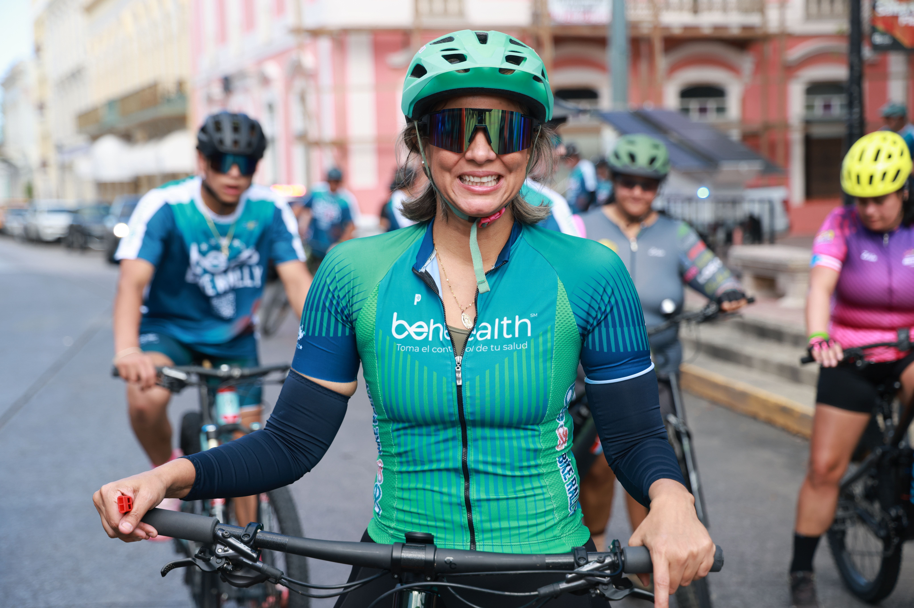
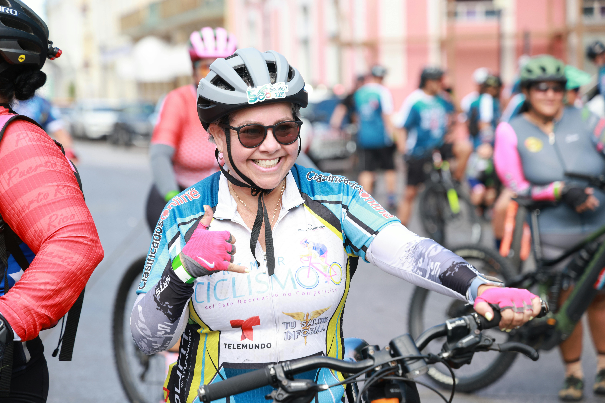

¿Cómo nació
La Vuelta del Coyote?
Un grupo de ciclistas de montaña buscaban crear un recorrido desafiante en contacto con la naturaleza. Lo que inició como una actividad local se convirtió en un evento reconocido por su nivel técnico y la pasión de sus participantes.

MTB · Naturaleza · AdrenalinaEl propósito detrás del evento
Este evento surge del amor por el ciclismo de montaña y la necesidad de promover el deporte, la aventura y el respeto por la naturaleza. Cada edición reúne a ciclistas de todos los niveles unidos por la misma pasión.
Nuestro Equipo

01Adriana Hernández
Organizadora Principal
Emprendedora apasionada por el ciclismo de montaña. Coordina "La Vuelta del Coyote" con liderazgo y compromiso, garantizando una experiencia excepcional para participantes y espectadores.

02María José Castillo
Coordinadora Médica
Doctora dedicada y apasionada del ciclismo. Aporta su experiencia en salud y bienestar para garantizar la seguridad de todos los participantes durante el evento.

03Tamara Camacho
Diseñadora de Rutas
Competidora destacada con profundo conocimiento del terreno. Diseña rutas desafiantes que ponen a prueba los límites físicos y técnicos de cada participante.

04Fernanda González
Prensa y Comunicación
Periodista apasionada del MTB. Narra las historias del evento y captura la emoción y el espíritu competitivo de los participantes a través de sus reportajes.